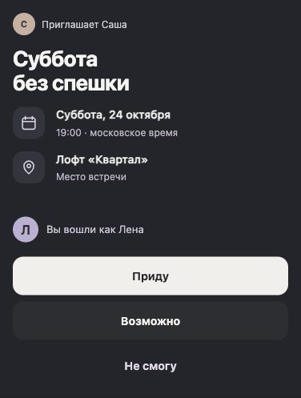
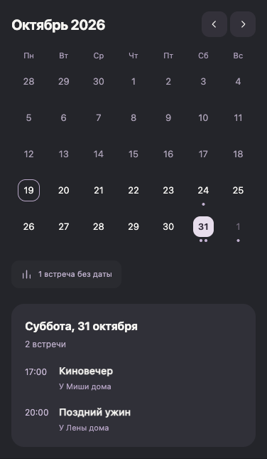

Ответы на приглашение
Друзья выбирают «Приду», «Возможно» или «Не смогу». Общий чат открывается после ответа «Приду».

Встречи с друзьями
Создайте встречу в Somewhere и отправьте ссылку друзьям. Ответы, обсуждение и задачи будут собраны в её ленте.
ПопробоватьВход через Яндекс ID
Может, соберёмся у Саши?
У него большой стол.
Настолки возьму! Кто умеет в «Каркассон»?
Друзья выбирают «Приду», «Возможно» или «Не смогу». Общий чат открывается после ответа «Приду».

После завершения опроса место меняется автоматически, если большинство проголосовавших поддержало предложение.
Предложите другу заказать пиццу. Ответственным он станет, когда сам примет задачу.
Предстоящие и прошедшие встречи доступны списком и в календаре. Встречи без даты показаны отдельно.
